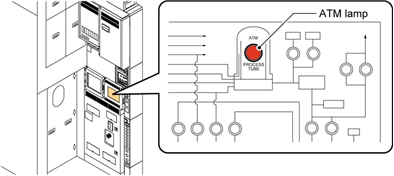
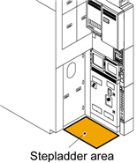
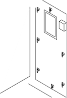
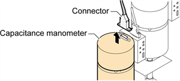
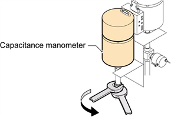
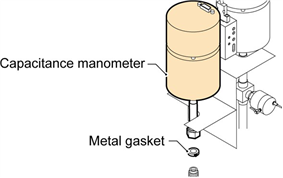
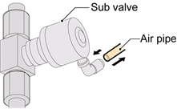
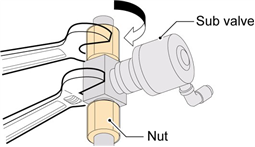
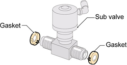

조치 방법:
유지보수 준비
1. 질소를 사용하여 공정 튜브를 퍼지하여 공정 튜브나 진공 라인에 유해 가스가 남지 않도록
합니다.
2. 가스 흐름도 패널의 ATM 램프를 사용하여 진공 라인이 대기압으로 돌아갔는지 확인합니
다.
3. 진공 파이프를 제거하기 전에 펌프를 멈추려면:
3.1 가스 박스의 가스 박스 흐름도 패널에서 부스터 펌프(BP) 및 드라이 펌프(DP) 버튼을 누
릅니다.
3.2 부스터 펌프 및 건식 펌프 버튼의 램프가 꺼져 있는지 확인합니다.
4. 모든 가스 공급을 끄려면:
4.1 가스 공급 밸브를 닫으려면 가스 흐름도 패널의 스위치를 누릅니다. 열린 밸브는 불이 켜
진 스위치로 표시됩니다.
4.2 위험 가스 라인의 모든 핸드 밸브를 닫습니다.
4.3 위험 가스 밸브를 잠그고 태그를 붙입니다.
5. 메인 히터 전원을 끄려면:
5.1 전원을 끌 수 있을 때까지 수동으로 메인 히터 온도를 낮춥니다.
5.2 히터 스위치를 끕니다.
히터의 수냉선 손상을 방지하려면 히터 차단기를 끈 후 최소 12시간 동안 냉각수의 흐름을


멈추지 마세요.
6. 다음 히터가 실온에 있는지 확인합니다:
심한 화상을 방지하려면 유지보수를 하기 전에 히터를 실온으로 식히세요.
메인 히터 : WAVES 컨트롤러 온도 상태 화면 또는 EXCORE 미터 릴레이에서 확인합니다.
7. 시스템을 완전히 종료합니다.
8. 전원 박스 메인 차단기를 잠그고 태그를 붙입니다.
9. 진공 라인 커버를 제거합니다.
10. 청소기 커버를 제거합니다.
커패시턴스 마노미터 제거
11 유지보수 구역에 스텝래더를 배치하여 정전 용량 측정기를 제거합니다.




Standard Specification
Scavenger safety
cover
N2 Purge Box Specification
Scavenger
cover
Scavenger
cover
참고: 스텝래더에서 넘어져 뼈가 부러지거나 다른 부상을 입지 않으려면 스텝래더에서 작업
할 때 항상 안전 하네스를 사용하세요.
12. 정전 용량 측정기 커넥터를 제거합니다.
13. 정전 용량 압력계를 제거하려면:
13.1 진공 파이프 너트를 렌치로 고정하고 두 번째 렌치를 사용하여 커패시턴스 압력계 너트
를 풉니다.
13.2 너트를 제거하고 진공 파이프에서 정전 용량계를 제거합니다.
13.3 진공 파이프 연결부에서 금속 개스킷을 제거합니다.
서브 밸브 제거
14. 서브 밸브에 연결된 공기 파이프를 제거합니다.




15. 진공 파이프에서 서브 밸브를 제거하려면:
15.1 렌치로 서브 밸브 본체를 고정하고 두 번째 렌치를 사용하여 진공 파이프 너트를 풉니
다.
15.2 너트를 제거하고 진공 파이프에서 서브 밸브를 제거합니다.
15.3 서브 밸브의 나사산에서 금속 가스켓을 제거합니다.

